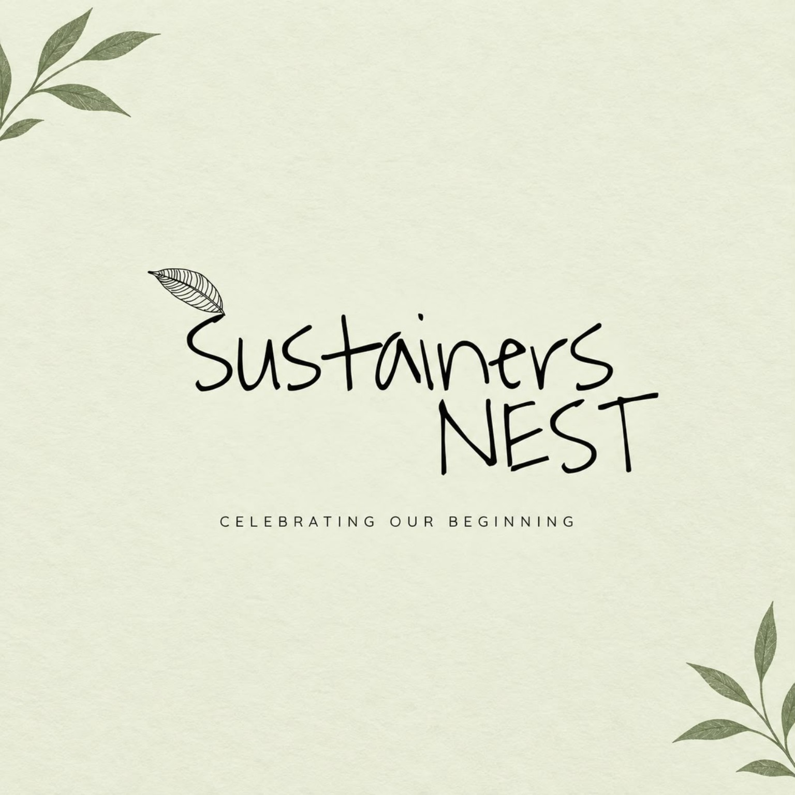

COMPLETED
COMPLETED
TRASH TO TREASURE
Nabinagar Government Primary School
20 & 22 September 2026
A two-part activity where young innovators connected waste awareness with creative upcycling.
View project activity →Sustainers NEST is a growing youth-led community turning environmental awareness into real-world action in institutes, communities and beyond.

Sustainers NEST officially started on 30 September 2025. Its first anniversary marks one year of growing environmental learning, action and community impact.
Bring your time, ideas, creativity or skills and help turn sustainability into action.
We are not waiting for the future. We are growing it.
A simple model keeps the work understandable and scalable as more young learners and institutes join.
Build habits, leadership and systems that keep the impact growing.
Recent documented work from every project, plus organization-wide advocacy and commitments.
COMPLETED
20 & 22 September 2026
A two-part activity where young innovators connected waste awareness with creative upcycling.
View project activity → COMPLETED
COMPLETED
16 September 2026
Climate learning, observation and creative expression with young environmental advocates.
View project activity → COMPLETED
COMPLETED
21 May & 11 June 2026
Young environmental stewards combined climate learning with 21 days of plant care, reporting and recognition.
View project activity → COMPLETED
COMPLETED
28 September 2026
Climate solutions, collaborative young learner action and visual advocacy through an interactive workshop.
View project activity → COMMITMENT
COMMITMENT
1 July 2026
Sustainers NEST joined a youth-led commitment to reduce single-use plastics and strengthen zero-waste practices.
View activity →